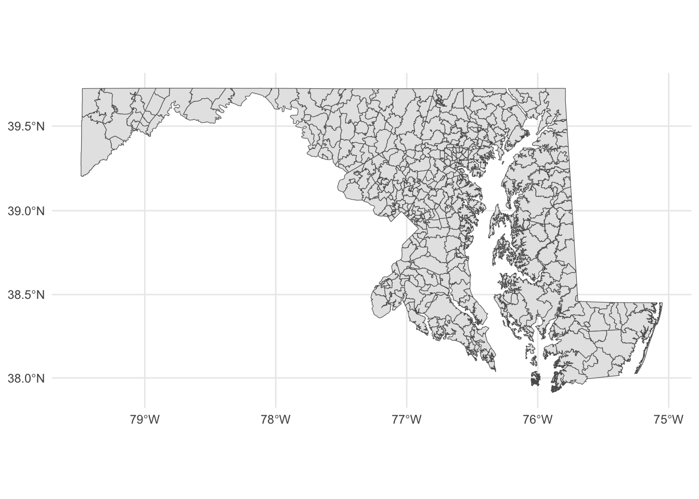
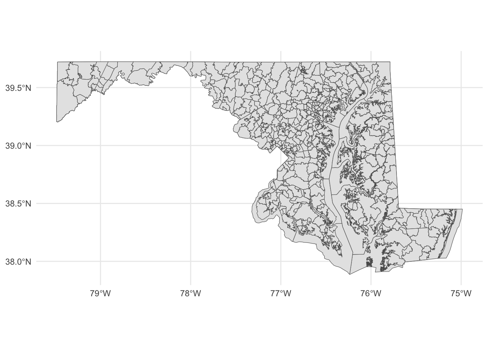
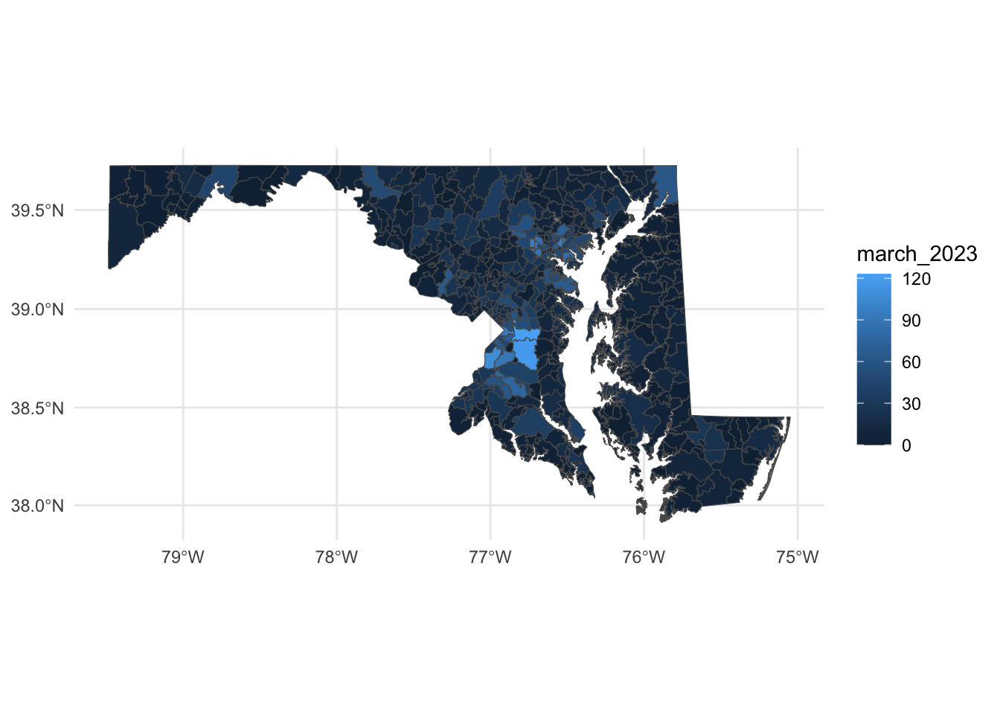

27 Geographic data basics
Up to now, we’ve been looking at patterns in data for what is more than this, or what’s the middle look like. We’ve calculated metrics like percentages, or looked at how data changes over time.
Another way we can look at the data is geographically. Is there a spatial pattern to our data? Can we learn anything by using distance as a metric? What if we merge non-geographic data into geographic data?
The bad news is that there isn’t a One Library To Rule Them All when it comes to geo queries in R. But there’s one emerging, called Simple Features, that is very good.
Go to the console and install it with install.packages("sf")
To understand geographic queries, you have to get a few things in your head first:
- Your query is using planar space. Usually that’s some kind of projection of the world. If you’re lucky, your data is projected, and the software will handle projection differences under the hood without you knowing anything about it.
- Projections are cartographers making opinionated decisions about what the world should look like when you take a spheroid – the earth isn’t perfectly round – and flatten it. Believe it or not, every state in the US has their own geographic projection. There’s dozens upon dozens of them.
- Geographic queries work in layers. In most geographic applications, you’ll have multiple layers. You’ll have a boundary file, and a river file, and a road file, and a flood file and combined together they make the map. But you have to think in layers.
- See 1. With layers, they’re all joined together by the planar space. So you don’t need to join one to the other like we did earlier – the space has done that. So you can query how many X are within the boundaries on layer Y. And it’s the plane that holds them together.
27.1 Importing and viewing data
Let’s start with the absolute basics of geographic data: loading and viewing. Load libraries as usual.
library(tidyverse)
library(sf)
library(janitor)First: an aside on geographic data. There are many formats for geographic data, but data type you’ll see the most is called the shapefile. It comes from a company named ERSI, which created the most widely used GIS software in the world. For years, they were the only game in town, really, and the shapefile became ubiquitous, especially so in government and utilities.
More often than not, you’ll be dealing with a shapefile. But a shapefile isn’t just a single file – it’s a collection of files that combined make up all the data that allow you to use it. There’s a .shp file – that’s the main file that pulls it all together – but it’s important to note if your shapefiles has a .prj file, which indicates that the projection is specified. You also might be working with a GeoDatabase, or a .gdb file. That’s a slightly different, more compact version of a Shapefile.
The data we’re going to be working with is a Shapefile of Maryland zip codes from the state’s GIS data catalog.
Similar to readr, the sf library has functions to read geographic data. In this case, we’re going to use st_read to read in our hospitals data. And then glimpse it to look at the columns.
md_zips <- st_read("data/md_zips/BNDY_ZIPCodes11Digit_MDP.shp")Reading layer `BNDY_ZIPCodes11Digit_MDP' from data source
`/Users/dpwillis/code/datajournalismbook-maryland/data/md_zips/BNDY_ZIPCodes11Digit_MDP.shp'
using driver `ESRI Shapefile'
Simple feature collection with 526 features and 7 fields
Geometry type: MULTIPOLYGON
Dimension: XY
Bounding box: xmin: -8848487 ymin: 4567000 xmax: -8354398 ymax: 4825836
Projected CRS: WGS 84 / Pseudo-Mercatorglimpse(md_zips)Rows: 526
Columns: 8
$ OBJECTID <int> 1, 2, 3, 4, 5, 6, 7, 8, 9, 10, 11, 12, 13, 14, 15, 16, 17, …
$ ZIPCODE2 <chr> "02400121502", "02400121521", "02400121530", "02400121532",…
$ ZIPNAME <chr> "Cumberland", "Barton", "Flintstone", "Frostburg", "Lonacon…
$ EXISTING <chr> "MDPV2017_18", "MDPV2017_18", "MDPV2017_18", "MDPV2017_18",…
$ ZIPCODE1 <chr> "21502", "21521", "21530", "21532", "21539", "21540", "2154…
$ Shape_Leng <dbl> 161775.468, 29199.174, 93603.136, 58275.951, 35065.607, 397…
$ Shape_Area <dbl> 441770403, 38842463, 267606761, 188918096, 65669461, 108639…
$ geometry <MULTIPOLYGON [m]> MULTIPOLYGON (((-8755679 48..., MULTIPOLYGON (…This looks like a normal dataframe, and mostly it is. We have one row per zipcode, and each column is some feature of that zip code: the fipscode, name and more. What sets this data apart from other dataframes we’ve used is the last column, “geometry”, which is of a new data type. It’s not a character or a number, it’s a “Multipolygon”, which is composed of multiple longitude and latitude values. When we plot these on a grid of latitude and longitude, it will draw those shapes on a map.
Let’s look at these zip codes We have 526 of them, according to this data.
But where in Maryland are these places? We can simply plot them on a longitude-latitude grid using ggplot and geom_sf.
md_zips |>
ggplot() +
geom_sf() +
theme_minimal()
Each shape is a zip code, with the boundaries plotted according to its degrees of longitude and latitude.
If you know anything about Maryland, you can pick out the geographic context here. You can basically see where Baltimore is and where the borders of the District of Columbia touch Maryland. But this map is not exactly ideal. It would help to have a county map layered underneath of it, to help make sense of the spatial nature of this data.
This is where layering becomes more clear. First, we want to go out and get another shapefile, this one showing Maryland county outlines.
Instead of loading it from our local machine, like we did above, we’re going to use a package to directly download it from the U.S. Census. The package is called tigris and it’s developed by the same person who made tidycensus.
In the console, install tigris with install.packages('tigris')
Then load it:
library(tigris)To enable caching of data, set `options(tigris_use_cache = TRUE)`
in your R script or .Rprofile.Now, let’s use the counties() function from tigris to pull down a shapefile of all U.S. counties.
counties <- counties()
glimpse(counties)This looks pretty similar to our Census blocks shapefile, in that it looked mostly like a normal dataframe with the exception of the new geometry column.
This county shapefile has all 3233 U.S. counties. We only want the Maryland counties, so we’re going to filter the data to only keep Maryland counties. There is no STATE column, but there is a STATEFP column, with each number representing a state. Maryland’s FP number is 24.
md_counties <- counties |>
filter(STATEFP == "24")To see what this looks like, let’s plot it out with ggplot. We can pretty clearly see the shapes of Maryland counties.
md_counties |>
ggplot() +
geom_sf() +
theme_minimal()With this county map, we can layer our places data.
Something to note: The layers are rendered in the order they appear. So the first geom_sf is rendered first. The second geom_sf is rendered ON TOP OF the first one.
We’re also going to change things up a bit to put the datasets we want to display INSIDE of the geom_sf() function, instead of starting with a dataframe. We have two to plot now, so it’s easier this way.
ggplot() +
geom_sf(data=md_counties) +
geom_sf(data=md_zips) +
theme_minimal()
Notice the subtle differences at the boundaries?
Let’s dive back into zip codes and this time bring along data on notices of intent to foreclosure by zip code (found at https://opendata.maryland.gov/Housing/Maryland-Notices-of-Intent-to-Foreclose-by-Zip-Cod/ftsr-vapt). Where are these foreclosure notices appearing?
foreclosure_zip <- read_csv("data/Maryland_Notices_of_Intent_to_Foreclose_by_Zip_Code.csv") |> clean_names()Rows: 547 Columns: 22
── Column specification ────────────────────────────────────────────────────────
Delimiter: ","
chr (1): Zip
dbl (21): July 2021, August 2021, September 2021, October 2021, November 202...
ℹ Use `spec()` to retrieve the full column specification for this data.
ℹ Specify the column types or set `show_col_types = FALSE` to quiet this message.foreclosure_zip_march_2023 <- foreclosure_zip |>
select(zip, march_2023)
View(foreclosure_zip_march_2023)Now we can join the zip codes to the foreclosure data.
zip_codes_with_foreclosures <- md_zips |> left_join(foreclosure_zip_march_2023, join_by(ZIPCODE1==zip))Now we can use color to distinguish zip codes from each other. Let’s use the number of foreclosure notices to start with:
county_centroids <- st_centroid(zip_codes_with_foreclosures)Warning in st_centroid.sf(zip_codes_with_foreclosures): st_centroid assumes
attributes are constant over geometries of xggplot() +
geom_sf(data=zip_codes_with_foreclosures, aes(fill=march_2023)) +
scale_colour_viridis_b(option="magma") +
theme_minimal()
With these changes, what can we make out here? First, you can pretty easily spot zip codes with a high number of foreclosures - in Prince George’s County in particular, along with zip codes around Baltimore and in places in the northeast and northwest parts of the state.